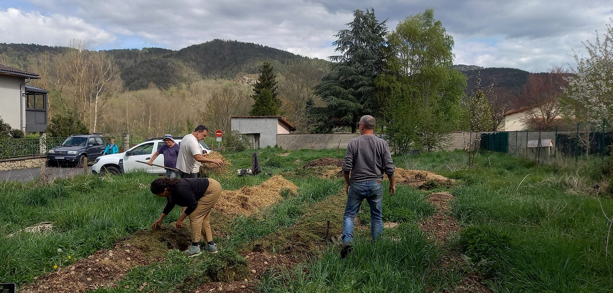
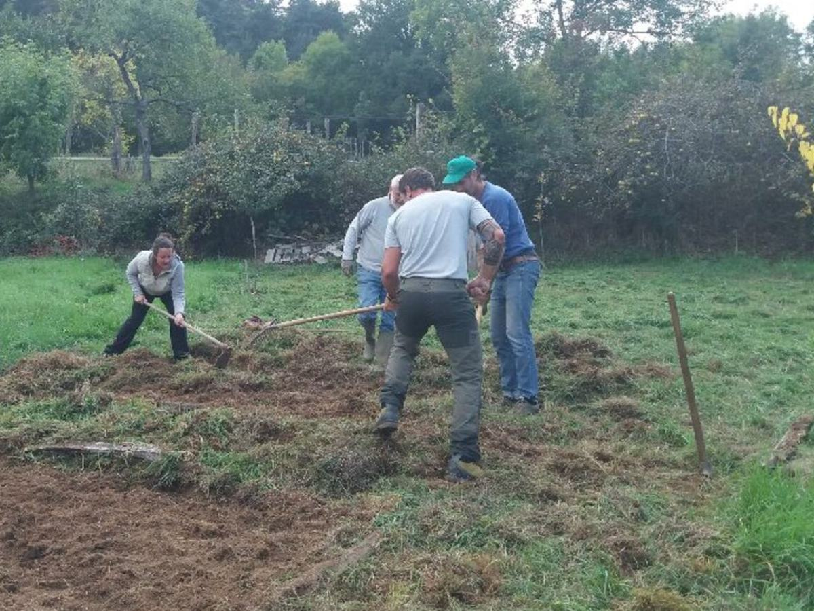
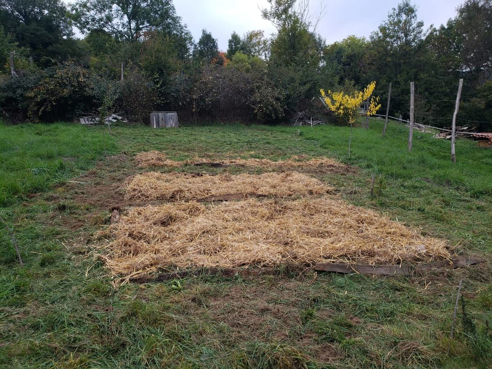
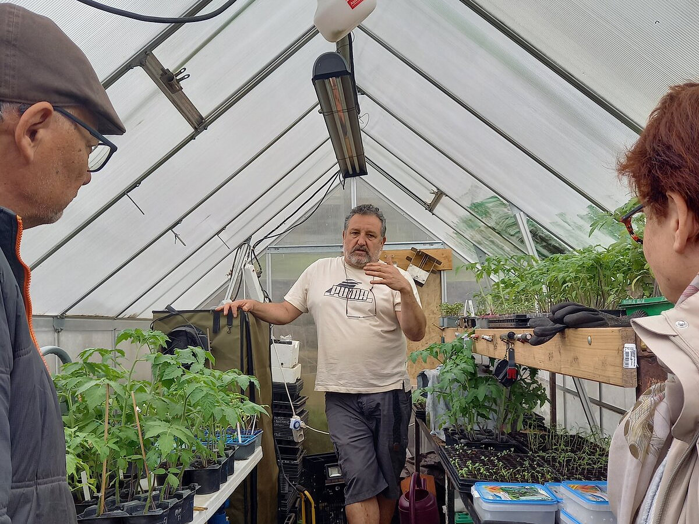
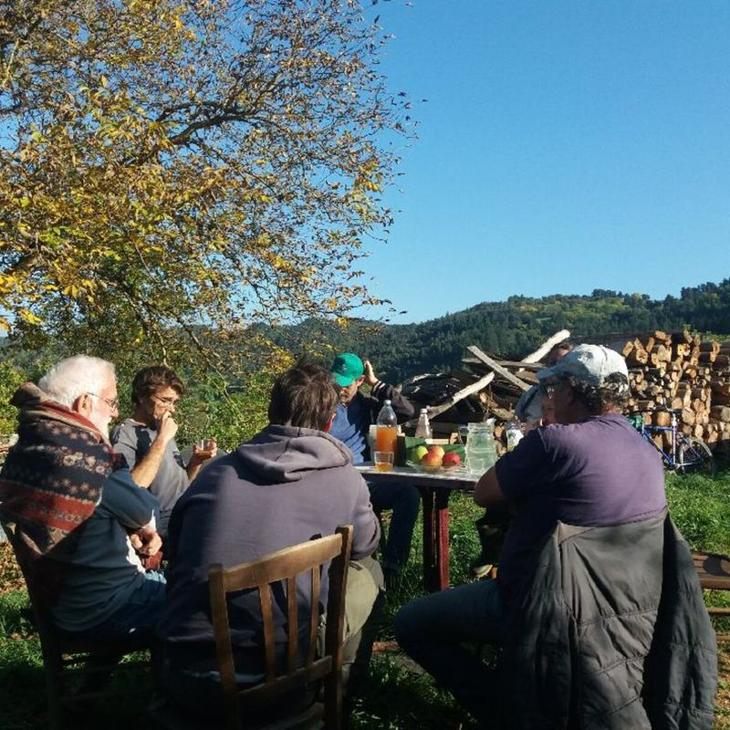
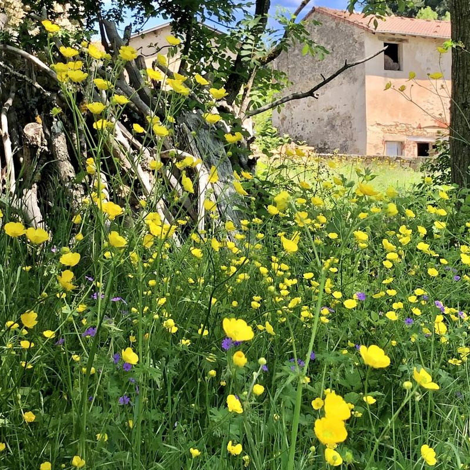
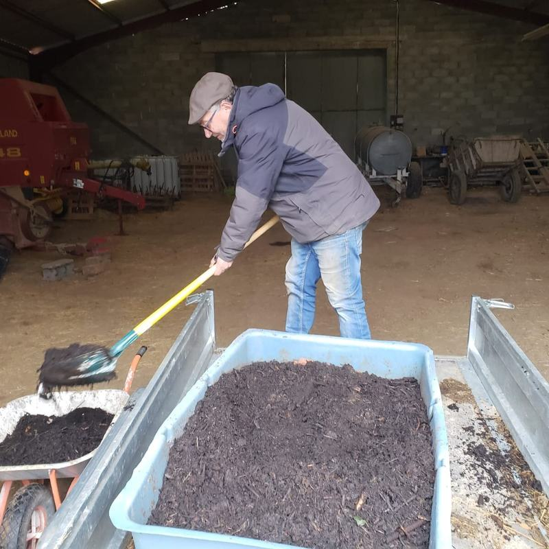
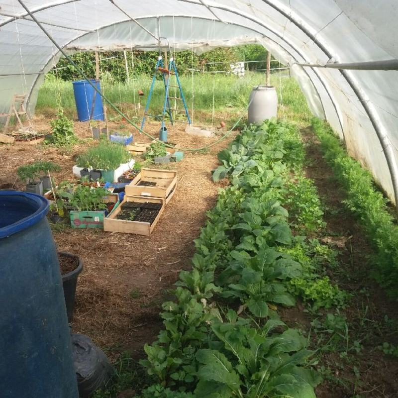

Jardins tournants
Un groupe de jardiniers qui se déplace d'un jardin à l'autre, pour travailler ensemble et apprendre les uns des autres.
Dans le centre-ouest de la Haute-Loire.

Le principe
À chaque sortie, le groupe se retrouve chez l'un d'entre nous, le temps d'une demi-journée. Celui qui reçoit décide du programme selon ses besoins et ses envies : un coup de main sur un chantier, une visite de son jardin, une formation, ou simplement des conseils à demander au groupe.

On se déplace ensemble
Personne ne reste seul devant son chantier. Le groupe arrive le matin, on se répartit le travail sur place, et on s'y met.

Une grosse tâche en une demi-journée
À dix, un chantier qui prendrait des semaines tout seul se fait en une demi-journée. C'est souvent ce qui débloque un jardin.

On apprend en faisant
Chacun voit comment les autres s'y prennent, sur leur terrain, avec leurs contraintes et leurs ratés. Aucun livre ne donne ça.
Le groupe aujourd'hui
Nous sommes une dizaine. Le groupe tourne depuis l'été 2025 et se retrouve environ une fois par mois, parfois un peu moins selon la saison et les disponibilités de chacun.
Nous restons volontairement sur un secteur resserré. C'est ce qui permet aux sorties d'avoir lieu pour de vrai, sans que personne ne fasse deux heures de route.
Venir avec nous
- Pas besoin d'avoir un terrain On peut participer aux sorties sans rien recevoir chez soi.
- Pas d'obligation de recevoir à son tour Ceux qui reçoivent le font parce qu'ils en ont envie.
- Ni adhésion ni cotisation Il n'y a rien à payer. Le groupe a une charte, que chacun lit et signe en arrivant. Son lien sera publié ici.
- Jardiner sans engrais ni pesticides de synthèse Au-delà de ça, chacun ses méthodes. Permaculture, potager classique, sol vivant : c'est justement en les confrontant qu'on apprend.
Comment ça se passe : écrivez-nous. Si une sortie est prévue et qu'il reste de la place, vous êtes invité à venir. On fait connaissance sur place, et on voit ensuite pour la suite. Le nombre de places est limité à chaque sortie, puisque c'est celui qui reçoit qui accueille tout le monde.
Prochaines sorties
Les sorties sont annoncées sur notre agenda public. Vous pouvez le consulter, vous y abonner, ou nous écrire si vous préférez être prévenu par mail.




Nous écrire
jardinstournants@ik.meÉcrivez-nous, même pour une simple question. Nous répondons entre deux sorties, alors comptez quelques jours.
Entre les sorties, on s'organise sur Framateam, une messagerie libre et sans publicité. Le canal du groupe sert à suivre ce qui se prépare, poser une question ou proposer un coup de main.
Le bouton mène à la page de connexion de Framateam. Si vous n'avez pas encore de compte, vous pouvez le créer là, c'est gratuit et ça prend quelques minutes, et le mode d'emploi détaille chaque étape. Si l'accès au canal vous est refusé, écrivez-nous et on vous ajoute.